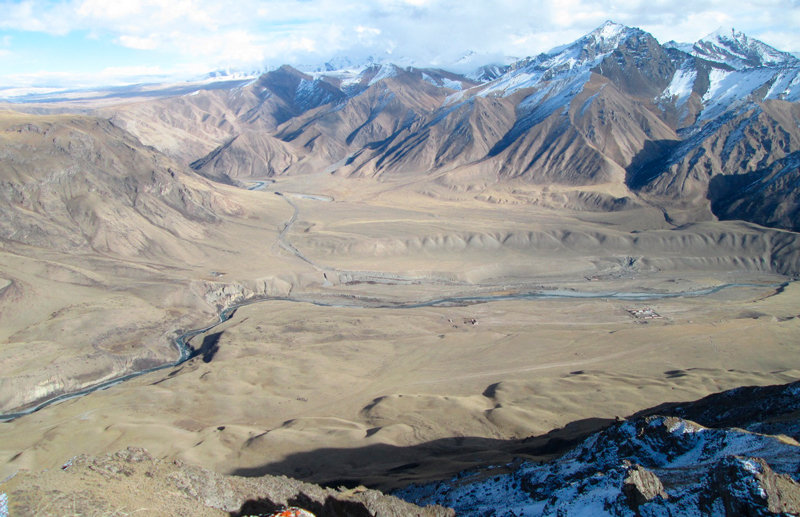

Introduction
Kuilyu Graphite is the operating company that holds the production and development licenses for the Kuilyu graphite deposit in Eastern Kyrgyzstan.
The deposit has already undergone initial exploration and a preliminary feasibility study that has ascertained the graphite as high grade, large flake; confirmed the substantial commercial return of the project and identified the likelihood of further, extensive reserves within the license area.
The management team have further added to this data in 2016/17 with extensive field works and new testing which have revealed even greater geological and commercial potential in the deposit.
The company is now focussed on advancing commercial and operating partnerships that will allow it to follow its strategy for the low risk, low capital and rapid development of production and further development of the deposit.
In parallel the company is developing its innovative social strategy that aims to bring the benefits of the operation to local communities and region and establish a growing and sustainable commercial base that will generate further wealth and opportunities for the region.
Background
 Deposit at 3 500m looking North East across the Kuilyu river and the road to Karakol in the middle-ground
The deposit has been explored and drilled previously, resulting in an initial state feasibility study in 1998 that concluded a commercially valuable resource of high quality graphite confirmed at 265 000 tonnes in the Arpu takyr II area and with the nearby areas of Kuilyu 1 and Voskresney containing further graphite deposits with a potential of an additional 6 500 000 tonnes.
After 1998 the project dropped into abeyance and only in 2015 the Kuilyu graphite team unearthed the study and combined with their wider research on the increasing use of graphite acquired the relevant licenses to develop the deposit.
Since 2015 the team has pushed forward in the development of the deposit:
- In 2016 the team made several exploratory visits to the deposit, evaluating the site, geology, local environment, local population, infrastructure, economics and access. This activity resulted in the completion of an initial mine plan, financial model, drilling plan and report submitted and accepted by the Kyrgyz Geological agency for the future development.
- 2017 has seen further progress and work increase with access roads constructed and new trenching undertaken, sample testing and liaison with local government and population continuing. The details of the 2017 work are discussed in greater detail below.
- The aim and the timetable of the project now focus on fund raising to produce an updated bankable feasibility study (BFS) and thereafter to bring in capital for the mine build and move to production.